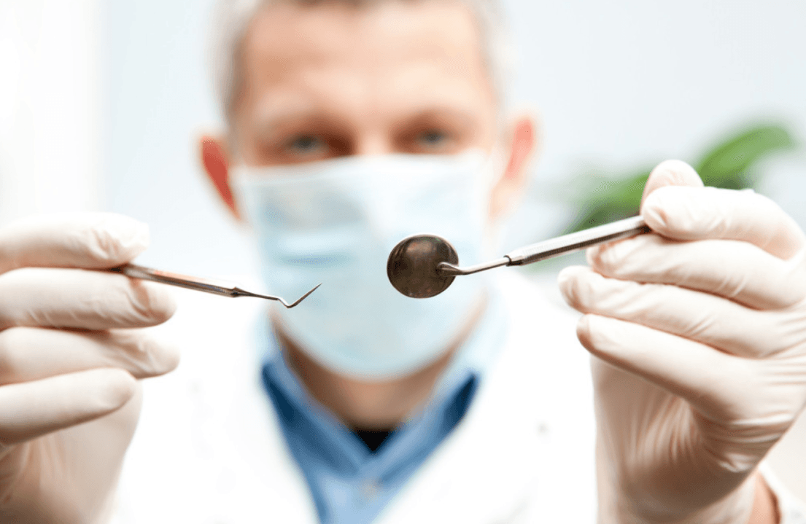

Clínica
MD Odontologia – Excelência em Odontologia no Rio de Janeiro
38 anos de excelência em prótese, implantes e estética dental, com unidades na Barra e Botafogo. Agende sua consulta!
Ler artigoDicas, curiosidades e artigos sobre saúde bucal escritos pelos especialistas da MD Frossard.
Fique por dentro das novidades em odontologia e cuide melhor do seu sorriso.
38 anos de excelência em prótese, implantes e estética dental, com unidades na Barra e Botafogo. Agende sua consulta!
Ler artigo
A MD Frossard Odontologia é referência na Barra da Tijuca por seu atendimento acolhedor, tecnologia de ponta e profissionais experientes que garantem sorrisos transformadores.
Ler artigo
Excelência em odontologia com dentistas na Barra da Tijuca. Atendimento personalizado e de alto padrão para você e sua família.
Ler artigo
Saiba tudo sobre o implante dentário na Barra da Tijuca e volte a mastigar e sorrir com segurança e conforto.
Ler artigo
A língua branca pode ter diferentes causas, algumas delas preocupantes. Entenda o que significa e o que fazer nessa situação.
Ler artigo
Conheça a clínica odontológica na Barra da Tijuca. A MD Frossard pode realizar o seu tratamento com toda segurança e conforto.
Ler artigo
Veja os 4 cuidados diários indispensáveis para a sua saúde bucal. Dicas simples que podem mudar completamente como você cuida da sua boca.
Ler artigo
Quando acontece o problema da coroa cair, o que você deve fazer? Quais são os procedimentos necessários para resolver isso com segurança.
Ler artigo
A odontologia estética já é uma realidade em vários consultórios. Ela se baseia na realização de procedimentos que visam melhorar o seu sorriso.
Ler artigo
Aprenda 5 dicas de saúde bucal. São dicas fáceis e simples, mas raramente praticadas no dia a dia. Com elas você pode melhorar muito seu sorriso.
Ler artigoNossa equipe está pronta para esclarecer todas as suas dúvidas e oferecer o melhor atendimento para o seu sorriso.